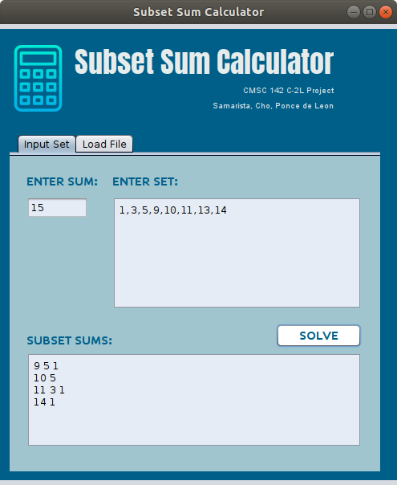
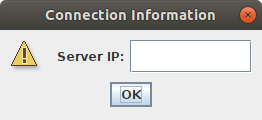
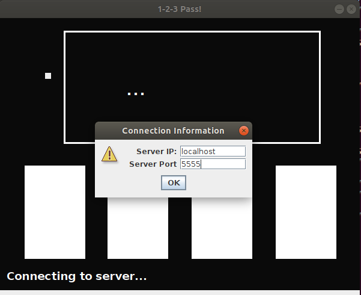
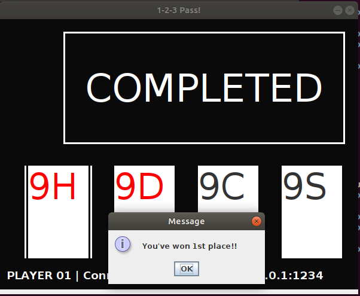
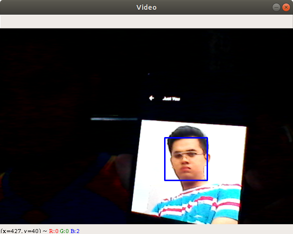
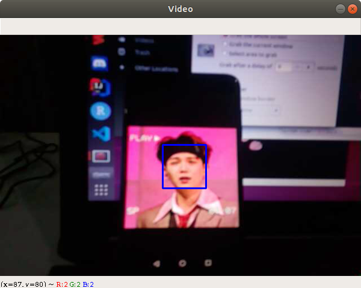
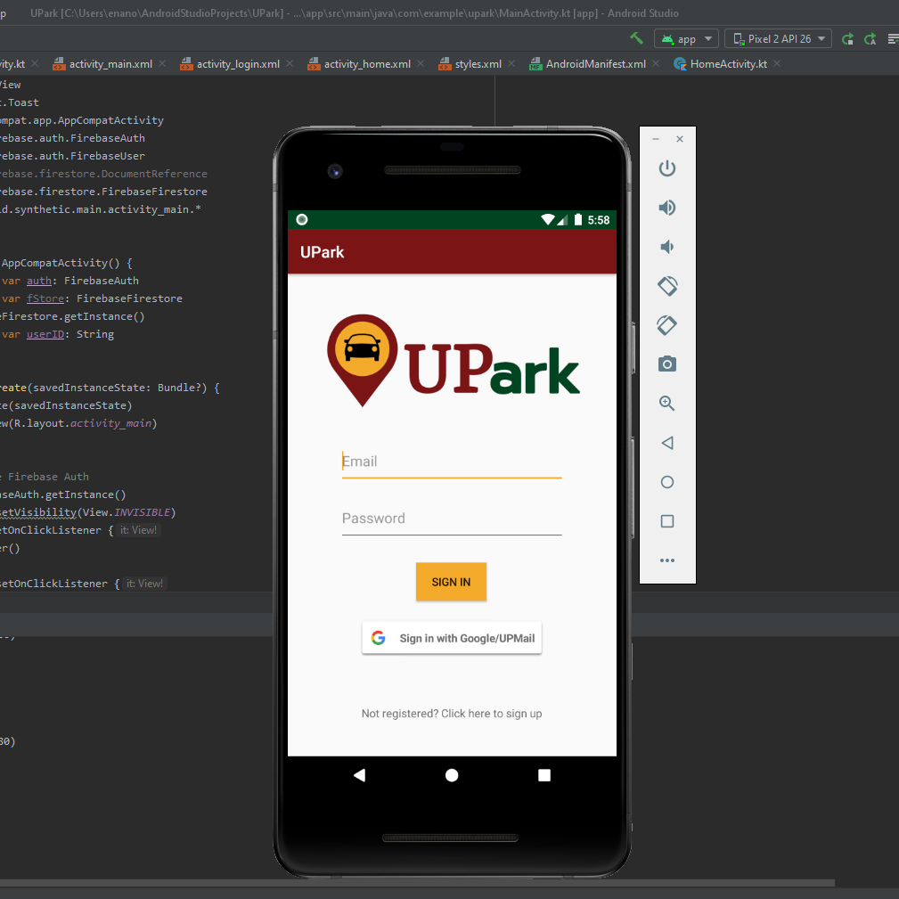
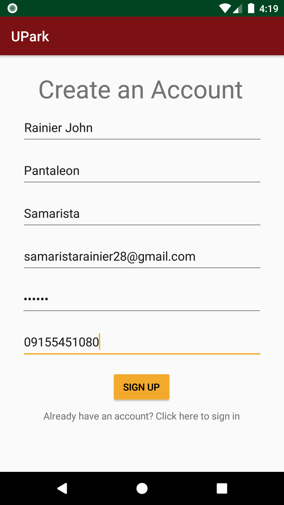
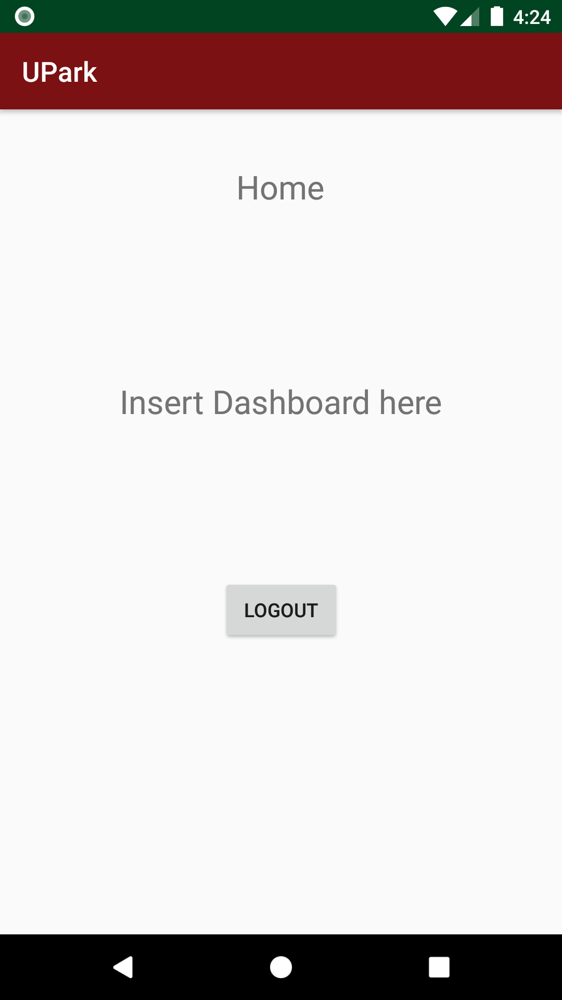

Subset Sum Calculator
·A calculator that can be used to solve the "Subset Sum Problem" using an optimized Backtracking Algorithm
·Subset Sum Problem is defined as "a problem where given a set with some integer elements and given another sum value, we have to find a subset of the given set whose sum is the same as the given sum value." -Tutorialspoint
·The project was made using Java and NetBeans IDE.

1-2-3 Pass! Multiplayer LAN
·1-2-3 Pass is a card game where in your goal is to get a 4 of a kind in your hand. You do this by passing 1 card from your randomized hand as you count "1 2 3". The first person to get 4 matching cards and place their hand in the middle wins.
·This is a take on the game with a LAN Multiplayer twist. Developed using Java, NetBeans, and IntelliJ



Frontal Face Detection using IP Camera and Webcam
·Face Detection using Python's OpenCV library and haar cascade classifier.
·The program has two settings, one is to connect to a smartphone's IP Camera or to use the PC's webcam.


The following projects are currently being worked on:
UPark
·UPark is my Thesis/SP project that got put on hold because of the pandemic.
·It is a parking application that is being made for the UPLB campus. Not for official use.
·Currently has log-in and sign-up authentication using Firebase Auth.



Personal Laravel/PHP Project
·Currently, I am studying Laravel and PHP. It is a personal goal of mine to make a project using them.
I am still trying to come up with a project idea.
×